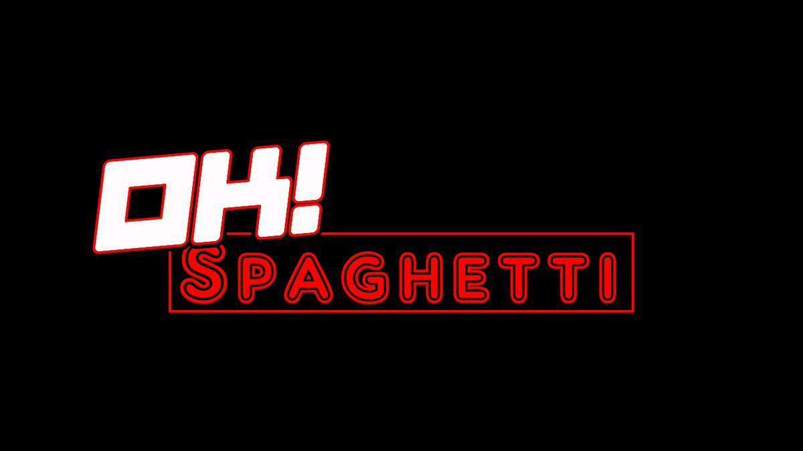

Welcome to the official website for OK! Spaghetti; Italian food like my Danish grandmother made. Here you will find anything and everything that you might want to know about our fine restaurant. Including, the menu, where you can find a compact, easily readable list of all of our finest dishes. You can also find a page that contains our story, where you can learn what drove us to create our restaurant, and a little bit about our background.
Welcome to the Official Website of:


We are located at (insert fake address here) and our hours are 11-9 Monday through Saturday. If you have any questions about our fine restaurant or whether we can cater your event please contact us at our email: okSpaghetti@business.com or feel free to contact us at our number (555) 555-5555 and ask to be put through to management.
If you’d like to place a to-go order please call us at (555) 555-5555. We are planning on including an online ordering form in the future so please stay tuned for that exciting addition to our website.